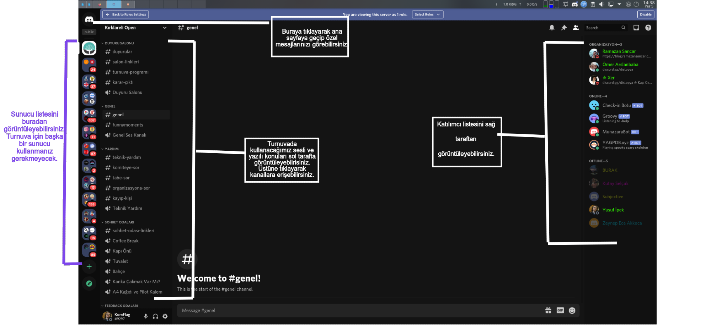
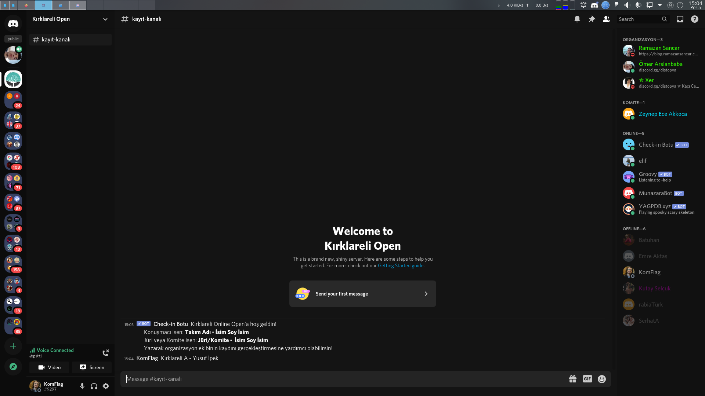
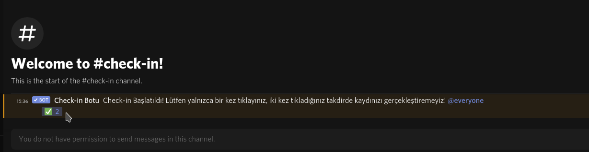
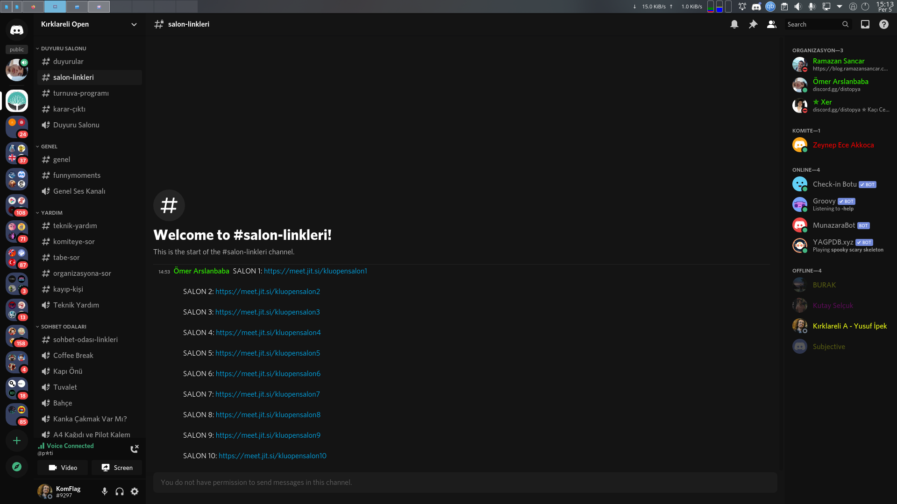
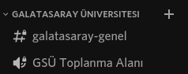

Kırklareli Münazara Kulübü
Turnuva Teknik Rehberi
Rehberdeki adımları okumanız turnuvadaki gecikmeleri önlemek için elzemdir. Lütfen dikkatlice her adımı okuyun. Kırklareli Üniversitesi olarak ilk turnuvamızı düzenliyoruz. İlk olmasından ötürü bizim için heyecanlı bir süreç. Umarım turnuvadan keyif alırsınız. Herkese başarılar!
Jitsi Meet
Maçlar ve karar süreci Jitsi Meet üzerinden olacak. Jitsi’ye erişebilmek için hesap kurmanıza gerek yok. Ancak salona giriş ekranında kullanıcı adınızı “Takım Adı – İsim” veya Jüriyseniz “J – İsim” yapmanız karışıklıkları önlemek için önemli.
Bilgisayardan bağlanıyorsanız direkt tarayıcıyla bağlantı üzerinden Jitsi Meet’e erişebilrisiniz. Telefondaysanız Android işletim sistemleri için buraya, ios işletim sistemleri için buraya tıklayarak uygulamayı telefona kuraiblirsiniz.
Discord
Turnuvanın genel organizasyonu Discord üzerinden yapılacak.
- Genel duyuruları yapmak,
- Yoklama almak,
- Organizasyona ve komiteye soru sormak,
- Takım arkadaşınızla maça hazırlanmak,
- Jürinizden bireysel geri-dönüt almak
- Okulunuzdan ve turnuvadan insanlarla iletişim halinde kalmak için kullanacağız.
Eğer bilgisayarınızda Discord yüklü değilse buradan kayıt olabilir ve indirebilirsiniz. Android işletim sisteminiz için buraya, ios işletim sisteminiz için buraya tıklayarak Discord’u telefonunuza indirebilirsiniz.
Discord Arayüzü
Turnuvaya Kayıt
Katılımcılara Discord sunucu bağlantısını içeren bir e-posta gelecek. Bağlantıya tıkladıktan sonra sunucumuzun kayıt kanalına bağlanacaksınız. Kayıt kanalına yarışmacıysanız; “Takım İsmi – İsim” jüriyseniz “Jüri – İsim” şeklinde bir mesaj göndermeniz gerekli. Siz bu mesajı attıktan sonra teknik ekipteki arkadaşlar gerekli rolleri size verecekler ve sunucuya erişim sağlayacaksınız.
Kayıt için örnek resim
Yoklama
Her turnuva sabahı 30 dakika yoklama alınacak bu süre içerisinde yoklama kanalına girip botun attığı mesajın altındaki yeşil butona tıklamanız gerekli.

Eşleşmeler
Her tur eşleşmesi duyurular kısmında ekran görüntüsü alınarak paylaşılacaktır.
Konunun Açıklanması
Konu açıklanmadan önce herkesin salonlara girmesi gerekiyor. Discord’da salon bağlantıları kısmından salonunuzun bağlantısını bulabilirsiniz.

Çalışma Süreci
Takım arkadaşınızla çalışmak için size özel açılmış Discord ses kanalını kullanabilirsiniz. Size özel sesli kanalınıza sol tarafta bulunan kanallar arasından ulaşabilirsiniz. Kanalınıza takım arkadaşınız ve siz dışında kimse giremez. Çalışma süresi boyunca Jitsi’de beklediğiniz için Jitsi’deki mikrofonunuzun kapalı olduğuna emin olun.

Maç Süreci
Çalışma süresi bittikten sonra, chair maçı normal bir şekilde yönetecek. Maç bittikten sonra yarışmacılar Jitsi’den ayrılacaklar. Panel kararı çıkardıktan sonra Discord’da “karar-çıktı” metin kanalından duyrulacak ve yarışmacıların salonlarına dönmesi beklenecek. Jitsi’den kopmanız ya da ayrılmanız durumunda tekrardan bağlantıya tıklayarak salona katılabilirsiniz.
Uzun sürecek tartışmalar ve bireysel feedbackler için Discord’taki “Feedback Ses Kanalları” üzerinden devam etmenizi rica ediyoruz.
Ballotların Verilmesi
Turnuvadan önce jürilere özel Tabbycat bağlantısı gönderilecektir. Bu bağlantı üzerinden maç sıralamasını ve konuşmacı puanını dikkatle girmeniz gerekli.
Okul İçi İletişim
Tıpkı çalışma kanalında olduğu gibi sadece aynı okuldan insanların ulaşabileceği sesli ve yazılı kanallar mevcuttur. Bu kanallar aracılığıyla okulunuzdaki münazırlarla iletişim halinde kalabilirsiniz.
